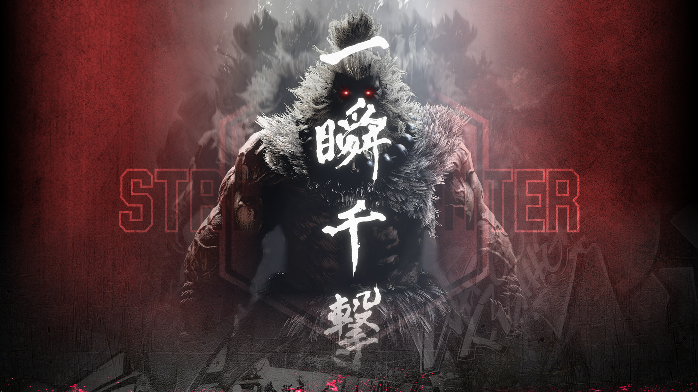

-

Ryu
Ryu regresa como un maestro veterano del Ansatsuken, más sereno y centrado que en juegos anteriores. Ha dejado atrás el conflicto con el Satsui no Hado y ahora busca perfeccionar su espíritu y su técnica. En SF6 porta un atuendo más tradicional tipo monje, y su estilo combina fuerza clásica con nuevas habilidades como las mecánicas Drive. Sigue siendo un luchador equilibrado, ideal para jugadores que quieren un personaje sólido y versátil.
-

Ken
Ken Masters llega a SF6 en uno de los momentos más duros de su historia. Tras ser falsamente acusado de participar en un atentado terrorista, pierde su prestigio y se ve obligado a vivir como fugitivo para proteger a su familia. Aunque su vida personal está en crisis y su matrimonio con Eliza atraviesa problemas, Ken mantiene su determinación y continúa entrenando para limpiar su nombre.
-

Akuma
Su carácter clásico está presente: un luchador que domina la fuerza oscura conocida como Satsui no Hado, y cuya vida está dedicada a buscar combates desafiantes contra rivales dignos